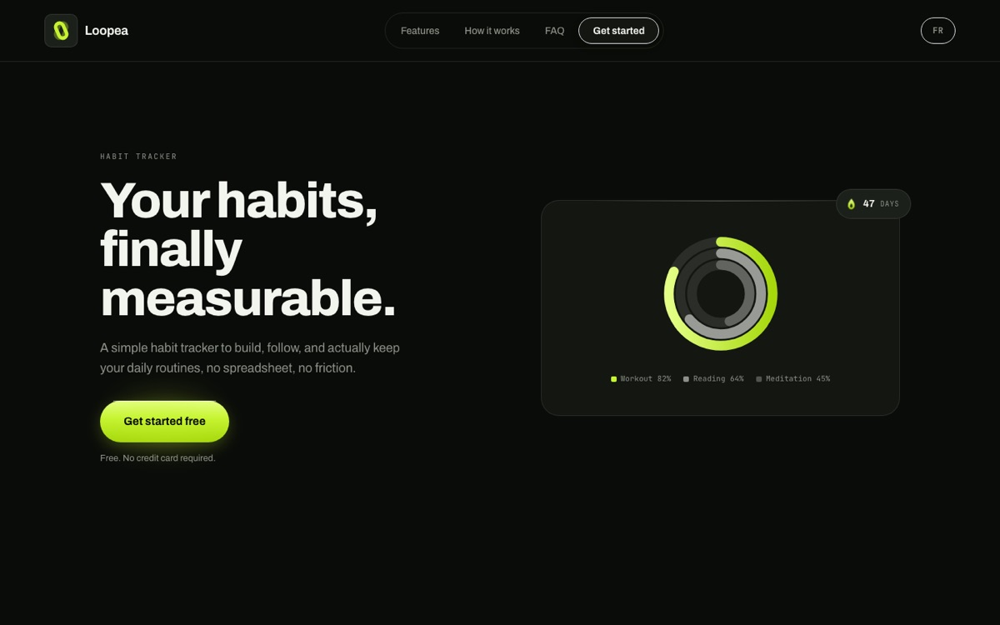
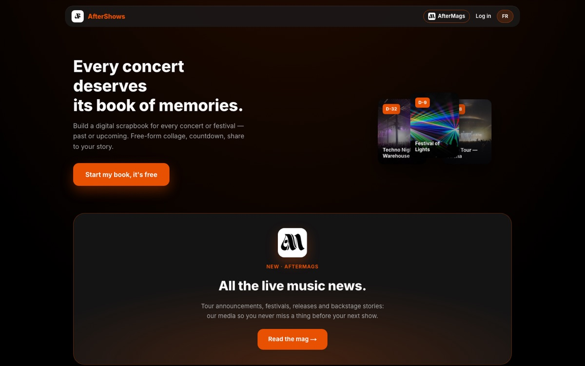
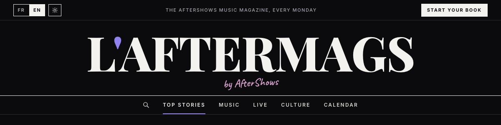

Loopea
En ligneApp de suivi d'habitudes avec une carte récap partageable, façon Strava. Connexion par passkey, interface en français et en anglais.
Next.js / Supabase / Vercel
Eloan
Fondateur d'Eloan DSG, une agence d'automatisation IA pour les agences immobilières indépendantes. En parallèle, je lance des micro-projets pour apprendre à livrer plutôt qu'à planifier. Voici ce que j'ai construit, ce qui tourne, et ce qui arrive.

App de suivi d'habitudes avec une carte récap partageable, façon Strava. Connexion par passkey, interface en français et en anglais.
Next.js / Supabase / Vercel

Un livre souvenir pour chaque concert ou festival : collage libre de photos, texte et autocollants, compte à rebours, partage en story. Co-fondé.
Next.js / Supabase / Vercel

Le média d'actus musique d'AfterShows : tournées, festivals, sorties, coulisses. Un site séparé qui nourrit l'app.
Un audit open source de workflows n8n : 20 règles (sécurité, fiabilité, coût IA, RGPD), un score sur 100, en ligne de commande et en skill d'agent. Zéro dépendance, aucun réseau.
Node.js
Publication prochaine
Une alternative open source et auto-hébergeable à Calendly, premier épisode de la série « On détruit l'industrie des SaaS ».
Next.js / Prisma / SQLite
Une alternative maison à Linktree : page perso avec liens, galeries, vidéos et stickers, et un admin avec aperçu en direct. Aucune dépendance.
Node.js
L'outil de l'agence pour habiller les chats n8n des démos : widgets en popup ou intégrés, éditeur avec aperçu en direct.
Next.js / Vercel
Outil interne
L'interface web de mes agents IA (prospection, contenu, veille). Partie d'un template, retravaillée et fermée au public pour un usage perso.
Next.js / Supabase / Vercel AI SDK
Accès privé
Un cercle privé Discord d'entrepreneurs ambitieux, avec son bot maison (sondages, check-ins, tickets) et un dashboard d'administration.
discord.js / Supabase
Cercle privé
Des vidéos animées en code : un moteur maison, des chartes par marque, des voix de synthèse, et la série « On détruit l'industrie des SaaS ».
HyperFrames / Three.js / Gemini
Un planificateur de repas de la semaine pour ma famille : nombre de personnes par repas, recettes sans répétition, liste de courses.
Node.js
Un jeu de survie Roblox dans l'esprit de The Walking Dead : camp de base, fouille, zombies attirés par le bruit, sac à dos limité.
Roblox / Luau
Une nouvelle interface pour Apple Music : des playlists en vinyles animés et des widgets, sur iPhone et Mac.
SwiftUI / MusicKit
Les premiers essais, gardés parce qu'on apprend aussi des projets abandonnés.